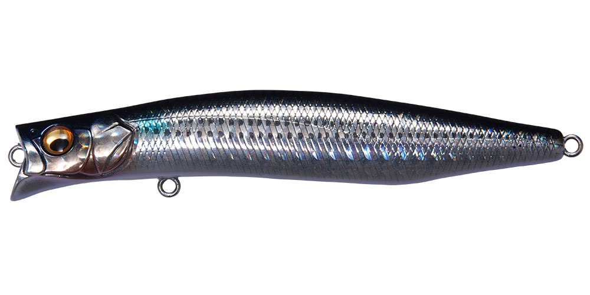
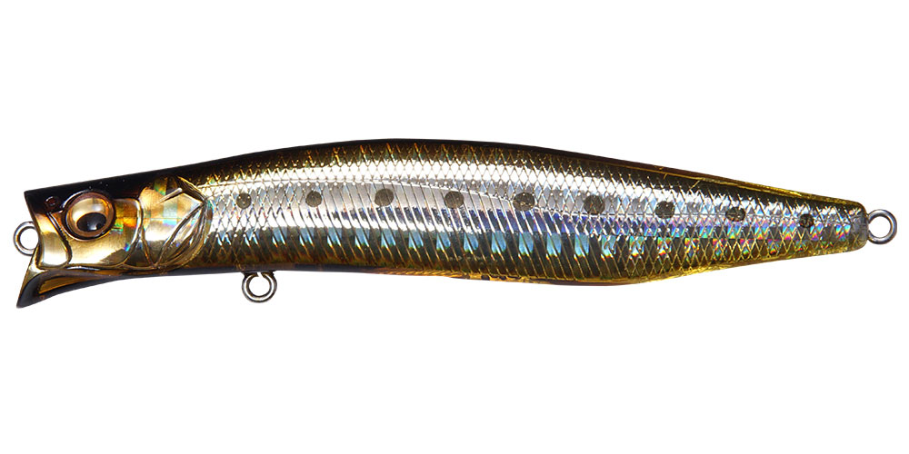
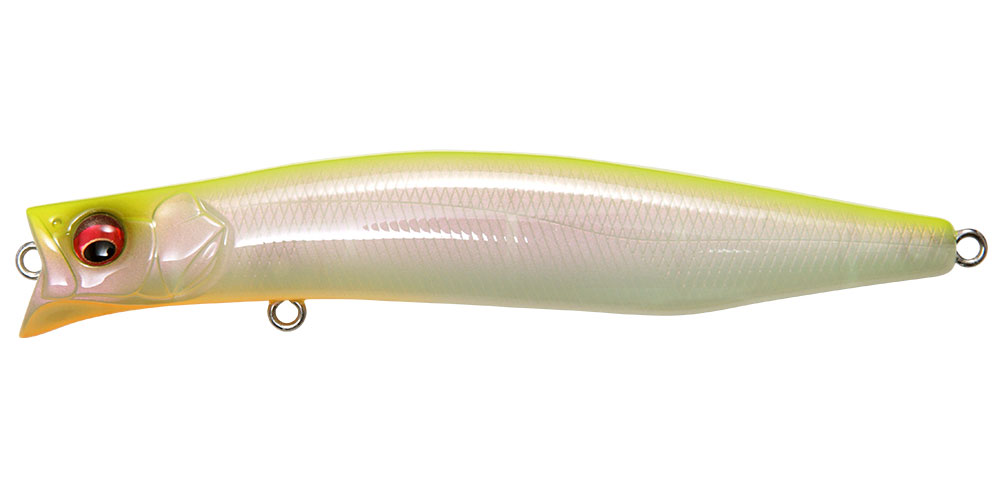
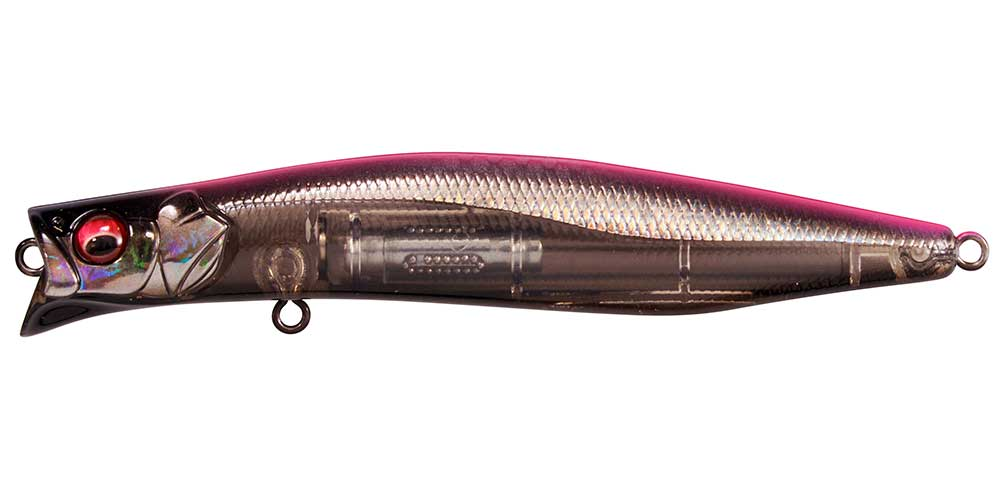

カゲロウ100F
（シャローランナー）
カゲロウ100F（KAGELOU 100F）はMegabass（メガバス）のフローティングシャローランナーです。
名作カゲロウ124Fの設計を受け継ぐ、対タフコン・シーバス用シャローランナーの100mmモデル。シーバスが表層を意識し、イナッコやカタクチなどの小型ベイトを捕食している状況にアジャストし、LBOⅡによる飛距離と即座の泳ぎ出しが最大の魅力です。

画像出典:Megabass公式HP
スペック
- メーカー
- Megabass（メガバス）
- タイプ
- フローティング（シャローランナー）
- 全長
- 100mm
- 自重
- 12g
- フック
- #5×2
- レンジ
- 20〜60cm
- 重心移動
- LBOⅡ
- ターゲット
- シーバス
- 価格
- 2,180円（税別）
▼今すぐチェック

カゲロウ100Fの特徴
小型ベイトパターンのタフな状況に合わせた、カゲロウの100mm・対タフコン仕様
-
速度で変わる2段階のロールアクション
124Fと同様に大きく切られたダーターカップで水を強く押し、低〜中速では微細なナチュラルロールでバイトを誘発。中〜高速に上げると、アピール力のあるスライドを伴ったロールアクションへと移行する。
-
重心瞬間移動システムLBOⅡで驚異的な飛距離
キャスト時には、ウェイトが磁界から離脱する時の慣性インパクトが強力な推進力を生み、100mm・12gとは思えない飛距離を実現。従来のLBOからシャフトレス化し、重心移動効率の向上と低重心化を図っている。
-
巻き始めた瞬間からアクションが始まる
ベアリング内蔵のウェイトユニットが、巻き始めと同時に前方のネオジム磁界へ瞬時に誘導固定される。リールを回し始めたその瞬間からアクションが始まるため、シャローでも無駄なく探れる。
カゲロウ100Fの使い方
基本はただ巻き。まずは低〜中速で巻き、微細なナチュラルロールで小型ベイトを演出してバイトを誘う。スレた魚が多い状況ほど、この控えめなアクションが効いてくる。
反応がない時や広範囲から魚を寄せたい時は、中〜高速に上げてスライドを伴うロールでアピールを強める。LBOⅡで着水直後からアクションが立ち上がるので、手前のシャローや明暗の境目もしっかり通せる。速度だけで「食わせ」と「アピール」を切り替えられるのがこのルアーの強みです。
カゲロウ100Fの得意な状況
シーバスが表層を意識し、イナッコやカタクチなどの小型ベイトを捕食している状況が最大の出番。
124Fではシルエットが大きすぎる時や、プレッシャーが高く普通のミノーでは見切られる「タフコン」の場面に強い。ベイトが小さく、なおかつ遠投も必要な状況で選びたい1本です。
ワンポイント
ナチュラルなロールで食わせるルアーなので、まずは巻き速度を落として「ギリギリ泳ぐ」くらいの速度を探すと、スレた魚の反応を引き出しやすくなります。
ベイトサイズが大きい時は124Fや155Fに持ち替えると、カゲロウの使い心地のままシルエットだけを合わせられます。
カゲロウシリーズの使い分け
| モデル | 全長／自重 | 得意な場面 |
|---|---|---|
| 100F | 100mm／12g | 小型ベイト・タフコン・レンジ20〜60cm（本記事のモデル） |
| 124F | 124mm／22g | シリーズの定番・レンジ0〜20cmのシャロー |
| 155F | 155mm／39g | 大型ベイト・レンジ0〜20cmのシャロー |
| MD 98F | 98mm／12g | 小型ベイト・最大0.8mのミドルレンジ |
| MD 125F | 125mm／21g | 中型ベイト・最大0.8mのミドルレンジ |
| MD 156F | 156mm／39g | 大型ベイト・最大0.8mのミドルレンジ |
カゲロウはシャロー系の100F・124F・155Fと、ミドルレンジ系のMDシリーズ（98F・125F・156F）を展開。ベイトサイズで長さを、通したいレンジでシャロー系かMDかを選ぶのが基本だ。100Fはシャロー系の中で最も小さく、小型ベイトのタフな状況を担うモデルになる。
オススメカラー
カゲロウ100Fは全21色展開。小型ベイトパターンのシーバスでオススメのカラーを厳選して紹介します。

GG BORAイナッコ（ボラの幼魚）パターンに合わせやすいナチュラル系カラー。

GG STAIN IWASHIカタクチイワシなど小型のイワシ系ベイトにマッチする定番カラー。

PM CHART BACK濁りやローライト時に存在感を出せるチャート系。

HT BLACK PINK BACKシルエットをはっきり出したいナイトゲームに。
画像出典:Megabass公式HP
カゲロウ100Fに似ているルアー
-
モニカ100F
シマノ
詳細はこちら＞
全長100mmのフローティングシャローランナー。同じ100mmクラスで、レンジ0〜10cmとカゲロウ100Fより浅い水面直下を引けるのが持ち味。より表層を意識した魚を狙いたい時の持ち替え候補になる。
-
 アイザー100F
ブルーブルー
詳細はこちら＞
アイザー100F
ブルーブルー
詳細はこちら＞
全長100mm・自重13.5gのシャローランナー。水面下20cm以内を弱々しいアクションで漂わせられ、プレッシャーが高く小型ベイトで渋い状況に強いという狙いどころがカゲロウ100Fと重なる1本。